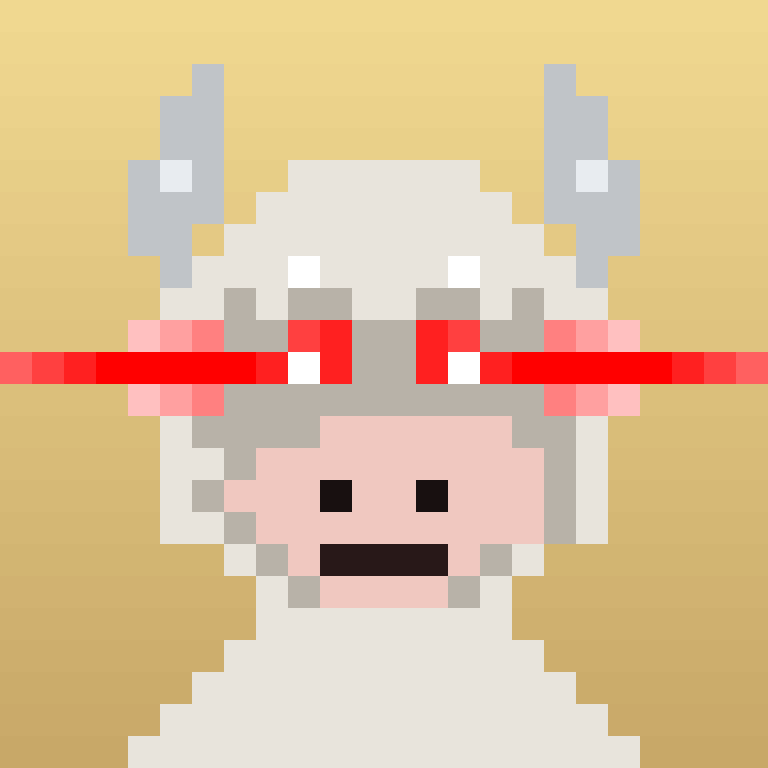

# how the seed works
When you wrap, the program mints a brand new NFT. Its mint address (a base58 Solana pubkey) is hashed:
seed = sha256(nft_mint_pubkey_base58)
The seed feeds a weighted trait roll across 7 slots (body, horns, eyes, background, accessory, eyewear, mouth) and then renders the result as a 24×24 grid of 1×1 SVG rectangles.
# the trait system
body palettes 9 brown / black / white / red / golden / cyan / pink / zombie / holo horn palettes 5 ivory / dark / gold / crimson / silver eye variants 8 normal / golden / void / green / closed / angry / crying / ski_mask backgrounds 7 pasture / sand / sunset / chart / void / sky / crimson accessories 28 crown, halo, cowboy_hat, mohawk, top_hat, fire_aura, ... eyewear 9 sunglasses, mog, clout, thug_life, 3d, lasers, ... mouth 11 cigarette, cigar, grill, bubblegum, frown, shout, ...
That gives a tier 1 combinatorial space far larger than the 1,000 supply cap. In practice the rare slots (holo body, ski_mask eyes, fire_aura, halo_stars) appear with weights of ~0.5 to 1%.
# tier reroll
Tier numbers (1 to 1000) are reused after unwrap. The number stays, but a rewrap mints a fresh NFT mint → fresh seed → fresh visual. So Bull #042 you see today is not necessarily the Bull #042 someone wraps next week.
# sample render
One of the 24×24 pixel SVGs rendered through the same path as /api/render/<tier>?format=png (768×768):

# renderer
The renderer is open source (~2,400 lines of pure JS) with no offchain dependency, no IPFS, no mutable metadata. Anyone can run it and reproduce the exact image from a mint pubkey.